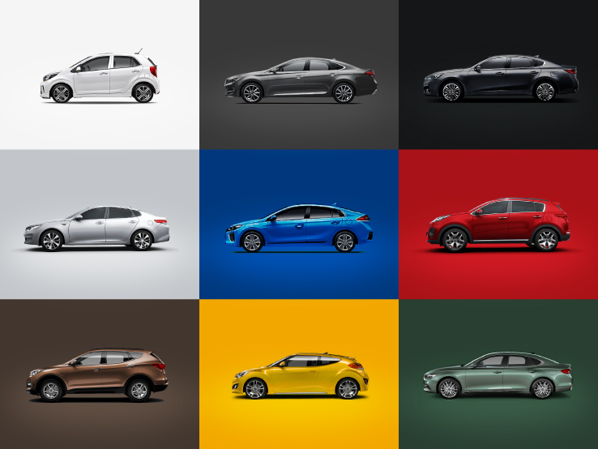

-

클론코딩 유튜브 사이트 따라 만들기(HTML+CSS 연습편, 웹 포트폴리오) | 프론트엔드 개발자 입문편: HTML, CSS, Javascrip jun codoing by jun 2M view -
클론코딩 유튜브 사이트 따라 만들기(HTML+CSS 연습편, 웹 포트폴리오) | 프론트엔드 개발자 입문편: HTML, CSS, Javascrip jun codoing by jun 2M view -
클론코딩 유튜브 사이트 따라 만들기(HTML+CSS 연습편, 웹 포트폴리오) | 프론트엔드 개발자 입문편: HTML, CSS, Javascrip jun codoing by jun 2M view